Demônios
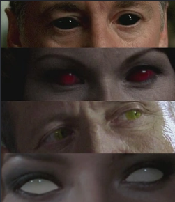
Demônios são almas humanas condenadas ao inferno que foram transformadas em criaturas malignas.
- Demônios de olhos negros: os demônios comuns. Como Ruby, que se tornou amiga dos Winchesters.
- Demônios de olhos vermelhos: demônios da encruzilhada, geralmente mais poderosos que os comuns. Realizam pedidos em troca de almas.
- Demônios de olhos amarelos: como Azazel, líder do exército de demônios. Muito poderoso.
- Demônios de olhos brancos: poderosos e temidos no inferno, como Lilith e Alastair.
- Cavaleiros do Inferno: muito poderosos e escolhidos a dedo por Lucifer, liderados por Cain o portador da primeira espada.
Vampiros
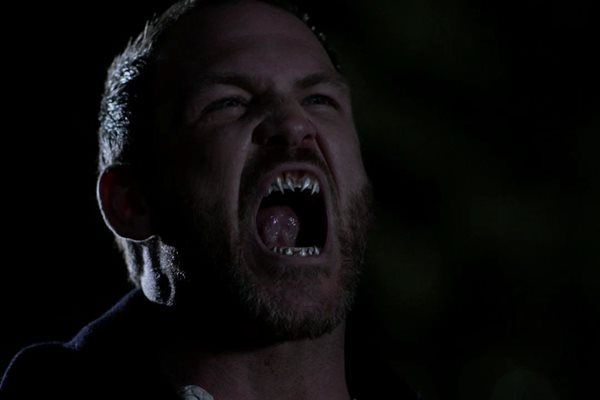
Vampiros são criaturas sobrenaturais que se alimentam de sangue humano.
- Possuem força e velocidade superiores às de humanos.
- Podem transformar humanos em vampiros.
- Possuem presas e grande resistência física.
Lobisomens
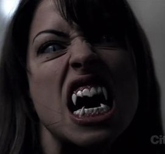
Lobisomens são humanos que possuem uma maldição que os transforma em criaturas semelhantes a lobos.
- Possuem grande força e velocidade.
- Normalmente se transformam durante a lua cheia.
- Podem transmitir a condição por meio de mordidas.
Fantasmas
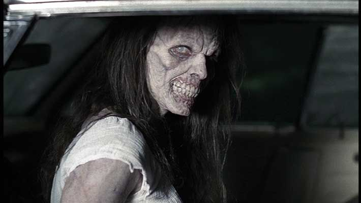
Fantasmas são espíritos de pessoas mortas que permanecem no mundo dos vivos.
- Podem aparecer em locais ligados à sua morte.
- Alguns conseguem possuir pessoas.
- Podem causar fenômenos sobrenaturais.
Bruxas
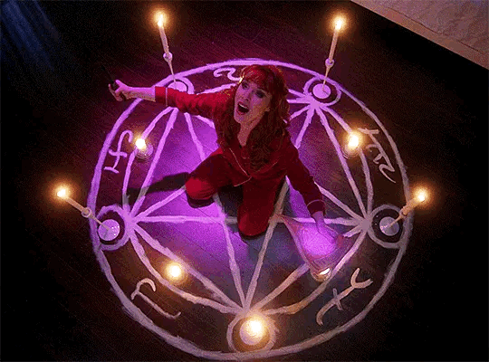
Bruxas são pessoas que utilizam magia e feitiçaria para realizar diversos tipos de encantamentos.
- Podem realizar feitiços.
- Podem lançar maldições.
- Algumas utilizam objetos mágicos para realizar seus poderes.
Anjos
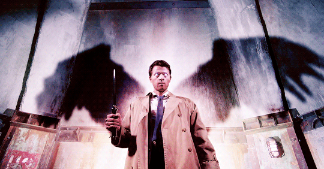
Anjos são seres celestiais extremamente poderosos que trabalham a serviço do Céu.
- Possuem asas e poderes sobrenaturais.
- Podem possuir corpos humanos.
- Podem utilizar poderes como telecinese e cura.
Arcanjos
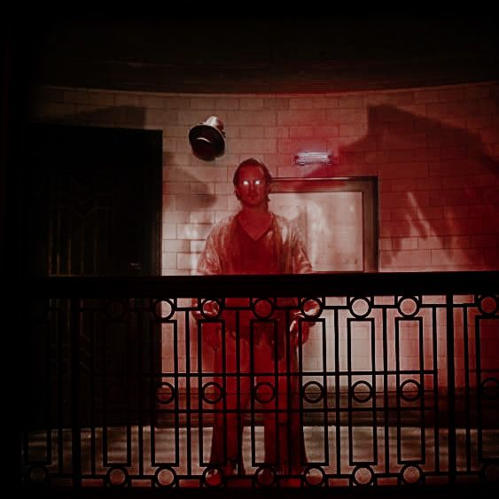
Arcanjos são alguns dos seres mais poderosos do Céu.
- Possuem poderes muito superiores aos dos anjos comuns.
- São extremamente resistentes.
- Entre eles estão Miguel, Lúcifer, Gabriel e Rafael.
Metamorfos
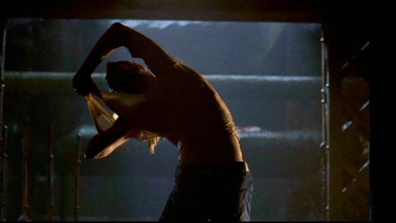
Metamorfos são criaturas capazes de assumir a aparência de outras pessoas.
- Podem copiar a aparência de seres humanos.
- Podem assumir características físicas da pessoa copiada.
- São capazes de enganar outras pessoas usando suas transformações.
Djinn
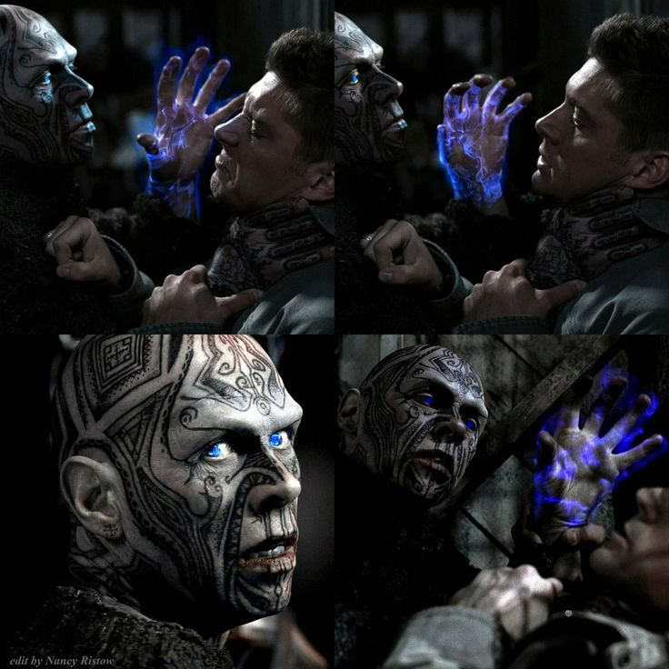
Djinn são criaturas sobrenaturais que podem colocar suas vítimas em estados semelhantes a sonhos.
- Podem criar ilusões.
- Alimentam-se da energia vital das vítimas.
- Podem fazer a vítima acreditar que está vivendo uma realidade diferente.
Wendigos
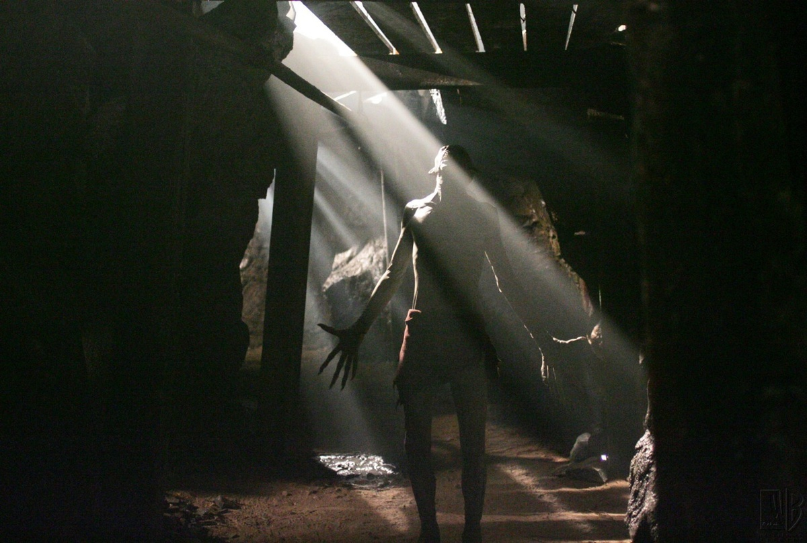
Wendigos são criaturas canibais que vivem principalmente em florestas e regiões isoladas.
- Possuem grande força e velocidade.
- São excelentes caçadores.
- Costumam sequestrar pessoas para se alimentar delas.
Hellhounds

Hellhounds são cães sobrenaturais ligados ao Inferno.
- São usados para perseguir pessoas condenadas.
- Podem atravessar algumas barreiras sobrenaturais.
- São extremamente rápidos e perigosos.
Leviatãs
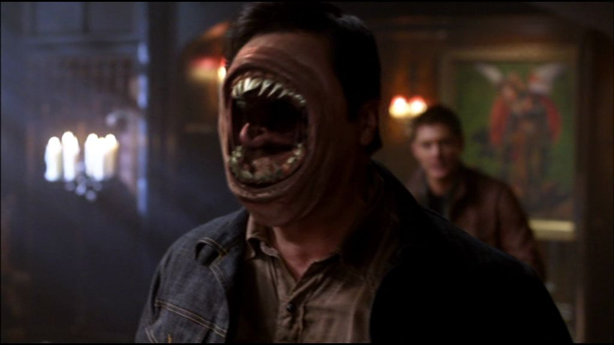
Leviatãs são criaturas antigas criadas por Deus e que ficaram presas no Purgatório.
- Possuem força e resistência extraordinárias.
- Podem assumir a aparência de outras pessoas.
- São extremamente difíceis de ferir.
Nephilim

Nephilim são seres híbridos que possuem sangue humano e angelical.
- Possuem poderes sobrenaturais.
- Podem ser extremamente poderosos.
- Jack Kline é um dos principais nephilim da série.
Sereias
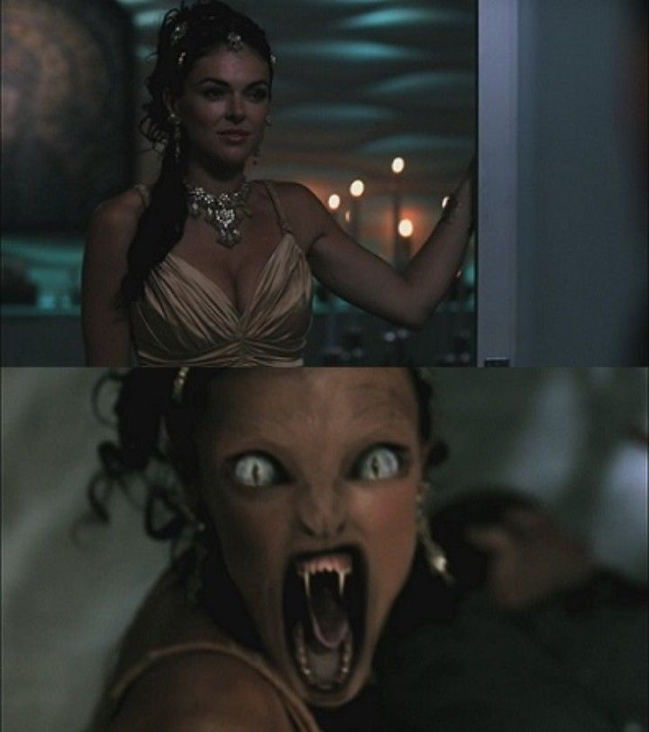
Sereias são criaturas sobrenaturais capazes de manipular as pessoas.
- Podem controlar emocionalmente suas vítimas.
- Podem assumir formas humanas.
- Utilizam poderes sobrenaturais para manipular outras pessoas.
Ghouls
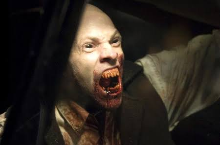
Ghouls são criaturas que se alimentam de cadáveres e carne humana.
- Vivem em cemitérios e locais relacionados a mortos.
- Possuem força superior à de humanos.
- Podem assumir a aparência de pessoas mortas.
Changelings
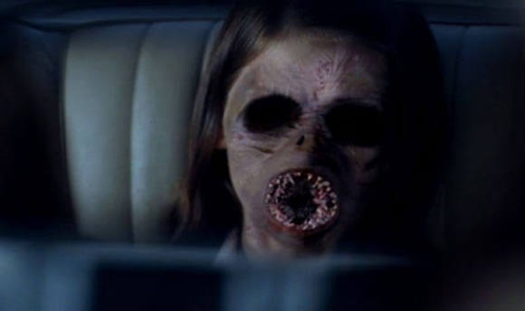
Changelings são criaturas que substituem crianças humanas.
- Podem assumir a aparência de crianças.
- Alimentam-se da energia de suas vítimas.
- Normalmente vivem escondidos entre humanos.
Rakshasas
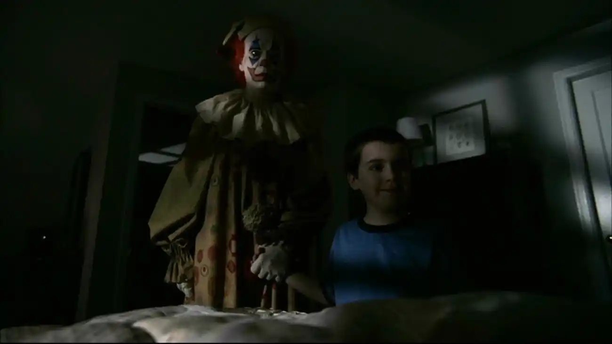
Rakshasas são criaturas sobrenaturais que possuem habilidades de transformação e conseguem entrar em casas sem serem convidadas.
- Podem assumir formas humanas.
- Possuem grande força.
- São predadores de seres humanos.
Dragões
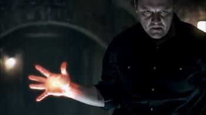
Dragões são criaturas extremamente antigas e poderosas.
- Possuem grande força.
- São extremamente resistentes.
- Alguns possuem conhecimentos mágicos.
Deuses Pagãos

Deuses pagãos são seres sobrenaturais ligados a diferentes culturas e mitologias.
- Possuem poderes relacionados à sua natureza ou culto.
- Alguns conseguem controlar elementos ou influenciar humanos.
- Podem ser extremamente poderosos.
Ceifeiros
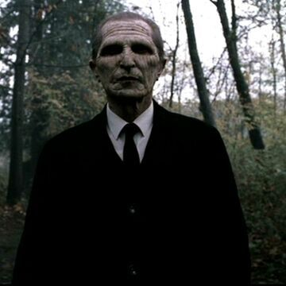
Ceifeiros são seres sobrenaturais responsáveis por conduzir almas após a morte.
- Podem aparecer para pessoas próximas da morte.
- São ligados ao funcionamento da morte.
- Possuem poderes sobrenaturais.
Valquírias
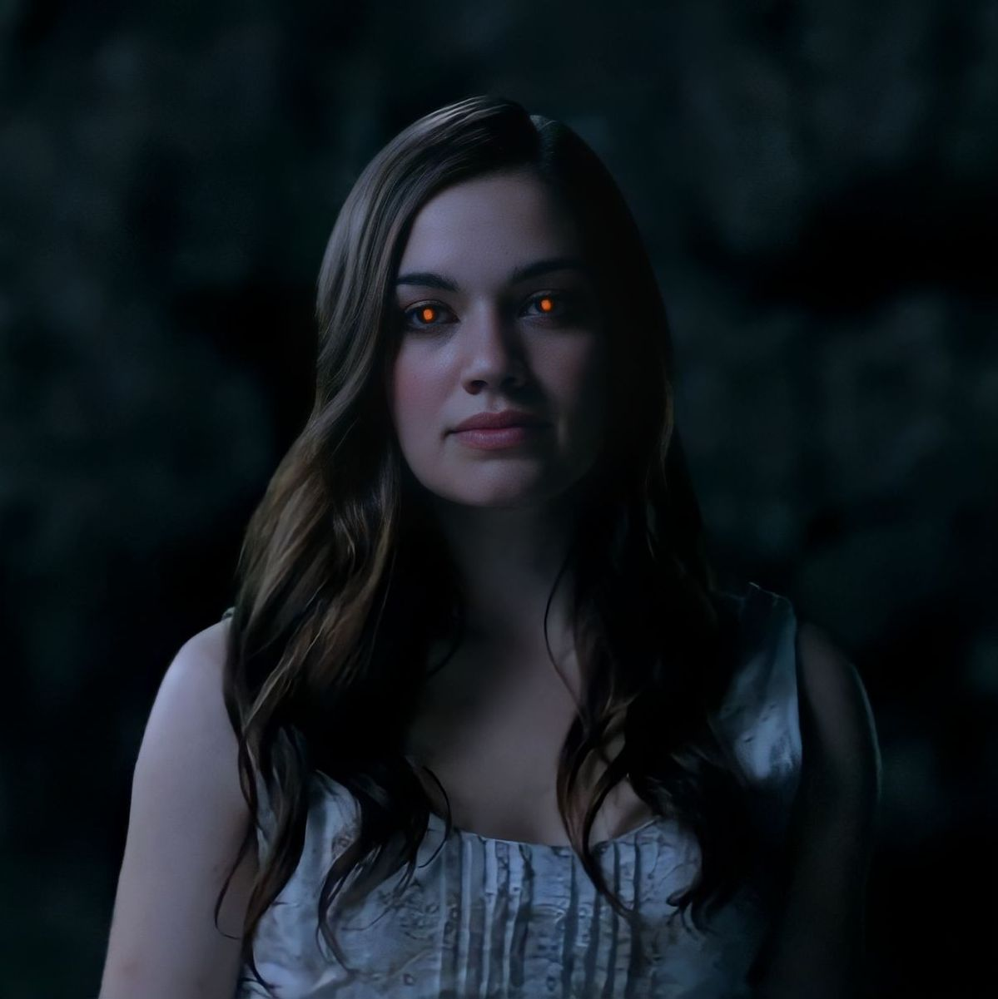
Valquírias são guerreiras sobrenaturais ligadas ao mundo dos mortos.
- São guerreiras extremamente habilidosas.
- Possuem força sobrenatural.
- Estão relacionadas à mitologia nórdica.
- Se reproduzem com humanos, a criança cresce rápidamente. E para a criança se tornar uma Valquiria de verdade, ela mata seu pai.